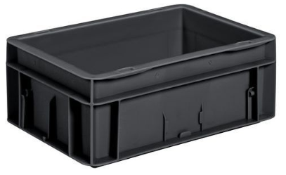
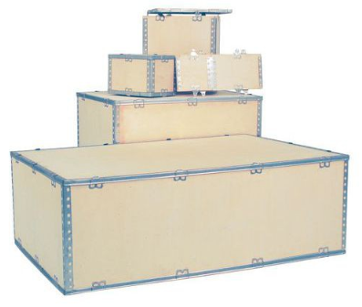

Achats¶
Note
Dimmensions en mm (longueur, largeur, hauteur).
3D Up Box+: 490 x 490 x 510
Silhouette Curio: 290 x 490 x 250
Roland GS-24: 500 x 870 x 1070
Bernina: 460 x 760 x 400
Dagoma: 330 x 330 x 550
Max: 500 x 870 x 550 (pieds Roland non calculés)
Explications de ma suggestion: le matériel est transporté dans des bacs placés éventuellement dans une caisse de transport (ou deux). La caisse de transport s’il y en a une est maintenue par une sangle ou plusieurs d’une longueur de 5 mètres pour être sûr de bien pouvoir faire le tour avec. Il n’est pas nécessaire de pouvoir faire rentrer toutes les machines en même temps, car elles ne seront pas toutes déployées au même endroit. La caisse de transport est optionnelle, car la surface du véhicule est antidérapante, donc les bacs devraient suffire à les maintenir en place. Une fois arrivé il faut sortir le charriot à deux plateaux avec rebords du véhicule, enlever les sangles de la caisse de transport pour l’ouvrir, prendre les bacs et les mettre sur le charriot. Les objets lourds et volumineux comme l’imprimante 3D vont sur le plateau du dessus pour éviter d’avoir à me baisser et parce qu’il n’y a pas de limite de hauteur.
Note
Pour mieux organiser le transport il faudra faire une liste du matériel nécessaire pour la réalisation de chaque atelier et du matériel de secours.
Matériel indispensable¶
Chariot 1 plateau bois rebords 965x655mm 250 Kg Variofit (entre deux plateaux 535 mm): https://www.manutan-collectivites.fr/chariot-1-plateau-bois-rebords-965x655mm-250-kg-variofit-itg3048277.html?refCom=Tous&webdo_20000509=Tous&webdo_20000225=Tous&webdo_20003721=Tous
Note
Les caractéristiques importantes sont:
les dimensions pour pouvoir transporter toutes les machines (pas forcément toutes à la fois)
avoir deux plateaux afin d’en avoir un en hauteur pour éviter de me baisser
avoir des roues blocables pour les transports
avoir des rebords surtout sur le plateau du haut pour éviter de faire tomber les accessoires
disposer d’un frein pour éviter une perte de contrôle dans une descente
avoir une poignée en hauteur
Note
Les roues me paraissent avoir un diamètre légèrement supérieur à la moyenne sur le charriot sélectionné, cela permettrait de l’utiliser sur de la terre.
2x (3D Up Box+ + un en plus): Bac 175L, parois et fond pleins , recyclé, Noir LxlxH = 800x600x425mm: https://www.manutan-collectivites.fr/bac-175l-parois-et-fond-pleins-recycle-noir-lxlxh-800x600x425mm-110267003.html?refCom=Tous&webdo_20001652=Tous&webdo_20000041=Tous&webdo_20003804=Tous
Note
Les caractéristiques importantes sont:
les dimensions (à noter que le bac fait presque la hauteur de la 3D Up Box afin de la protéger et saisir facilement)
des poignets
Peut-être, voir s’il serait possible d’avoir le bac avec l’imprimante 3D dedans directement sur le plateau du dessus du charriot et maintenu par les sangles pour ne pas avoir à la soulever.
7x (Curio + Bernina + Dagoma 1 + Dagoma 2 + onduleurs + 10 PCs + 10 tablettes graphiques): Bac 22L, parois et fond pleins , recyclé, Noir LxlxH = 600x400x120mm: https://www.manutan-collectivites.fr/bac-22l-parois-et-fond-pleins-recycle-noir-lxlxh-600x400x120mm-110266003.html?refCom=Tous&webdo_20001652=Tous&webdo_20000041=Tous&webdo_20003804=Tous
Matériel optionnel¶
Note
Ci-dessous les propositions sont optionnelles, le but étant aussi de perdre le moins de temps possible pour déployer le matériel.
Cembox de transport 750 litres (1700 x 840 x 800): https://www.manutan-collectivites.fr/cembox-750-itg3421037.html?refCom=Tous&webdo_20000225=Tous&webdo_20000041=Tous&webdo_20001652=Tous
Note
La caisse est longue et fait 800 mm de haut, il sera possible de superposer des accessoires et câbles au-dessus des machines.
La caisse de transport ne sera pas déplacée, de plus elle pèse 42 kg à vide.
Sangle d’arrimage à tendeur cliquet - Force 350 kg - Manutan (5 mètres): https://www.manutan-collectivites.fr/sangle-d-arrimage-a-tendeur-cliquet-force-350-kg-manutan-itg2259295.html
Note
5 mètres me semble être la taille minimale pour faire le tour de la caisse ou du charriot. Il faut voir combien il en faut.
A voir¶
Caisse de transport en contreplaqué avec couvercle: https://www.manutan-collectivites.fr/caisse-de-transport-en-contreplaque-avec-couvercle-cf-2169516.html?q=caisse+de+transport+en+contreplaqu%C3%A9